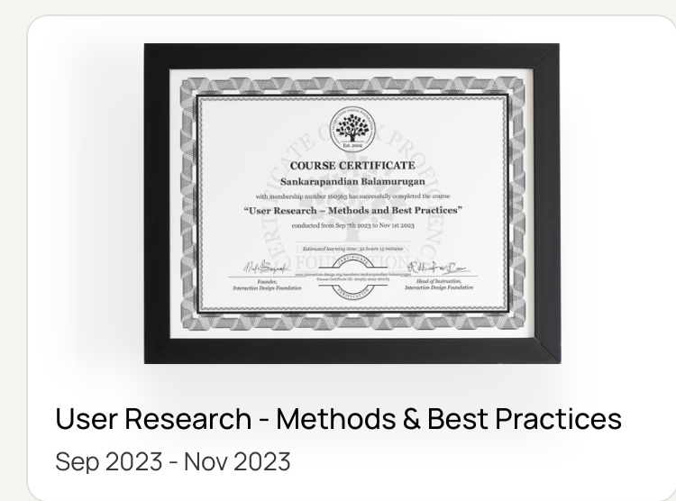
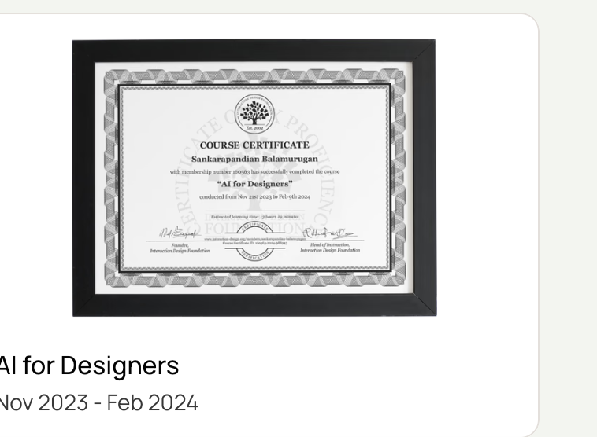
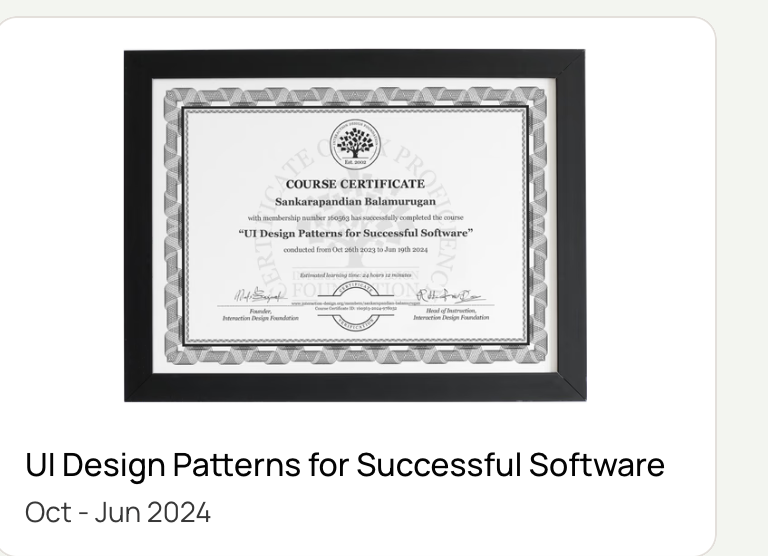

Senior UI/UX Designer
Codesculpt Innovations
ABOUT / DESIGN THINKING & DELIVERY
I'm a Senior UI/UX Designer with approximately eight years of experience turning complex business workflows into clear, usable digital products.
My work spans enterprise SaaS, HRMS, e-commerce admin tools, consumer experiences and scalable design systems. I connect product thinking, UX research, interaction details and implementation realities to design experiences that work.

01 / EXPERIENCE
Hands-on design across complex modules, evolving products and cross-functional teams.
Codesculpt Innovations
Macappstudio Pvt Ltd
02 / CAPABILITIES
A practical toolkit for designing, prototyping and building digital experiences.
03 / CONTINUOUS LEARNING
Verified courses across research, UI design, interaction patterns, product leadership and evolving tools.

Jan 24, 2022

Jan 24, 2022

Jan 24, 2022

Feb 11, 2022

Mar 21, 2022

May 5, 2022

Sep–Nov 2023

Nov 2023–Feb 2024

Oct 2023–Jun 2024

Jul 10, 2025

Jul 30, 2025

Aug 29, 2025

Nov 4, 2025

Jan 14, 2026

Mar 19, 2026
04 / RECOGNITION
Quarterly performance recognition, presented without confidential feedback screenshots or employer details.
Recognized with an A+ performance grade in all four quarterly reviews of 2025, reflecting consistent ownership, craft and collaboration.
2025 · 4 out of 4 quarters recognizedQ1 · 2025
Q2 · 2025
Q3 · 2025
Q4 · 2025
A summary of performance recognition. Original review screens and company information are intentionally not displayed.
05 / CONTACT
Let's connect and create something meaningful.